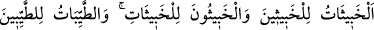
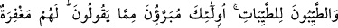
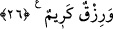

avamın ileri geri konuşması yasaklanmalıdır. Çünkü bu karşılıklı münâkaşa ve faydasız
tartışmalara sebebiyet verir ve insanlar arasında kavga ortamı oluşturur.
Üçüncüsü, şahsa lânet etmek. Adamın şer‘an küfrü sâbit olmuşsa ve bir müslümana
eziyet etme ihtimâli yoksa o adama lânet etmek câizdir. Meselâ ‘Allah’ın lâneti
Nemrud’un, Fir’avn’ın ve Ebû Cehil’in üzerine olsun.’ demek gibi. Çünkü bunların
küfür üzerine öldükleri şer‘an bilinen bir gerçektir. Fakat son nefesini ne şekilde
verdiği bilinmeyen biri için: ‘Allah ona lânet etsin. O bir yahudi idi veya fâsık idi.’
demek sakıncalıdır. Çünkü o, müslüman olmuş veya tevbe etmiş, sonra da Allah’ın
yakınlığını elde etmiş olarak ölmüş olabilir. O halde böyle bir kimsenin lânetlenmiş
olduğuna nasıl hükmedilebilir?!
2 - Kıyâmet günü Allah’ın konuşturmasıyla âzâlar şâhidlik edeceklerdir.
Günahkârların günahlarına şâhidlik edecekleri gibi itâatkârların da tâat ve ibâdetlerine
şâhidlik edeceklerdir. Dil ikrar ettiğine ve Kur’an okuduğuna, el mushafı tuttuğuna, ayak
mescide yürüdüğüne, göz ağladığına, kulak da Allah’ın kelamını dinlediğine şâhidlik
edecektir.
Denilmiştir ki: Âzâların kıyâmet günündeki şâhidlikleri tecil edilip sonraya bırakılmış
bir şâhidliktir. Halbuki onların bugün muhabbet konusunda yüzün sararması, rengin
değişmesi, bedenin zayıflaması, gözlerden yaşların akması, kalbin ürperip çırpması gibi
hususlarla şâhidlikleri hemenceciktir.
Hâfız der ki:
Zayıf ve güçsüzlükte nesîm gibi hoş ol
Bu yolda hastalık, sağlıktan daha iyidir
3- Cezâ ve karşılık, hak edişe göredir. Bu karşılık fâsıklar için Hak’tan ayrılık ve
onun ateşiyle yanmakladır. Sâlihler için derecelere ve cennetlere ermekle, ârifler için
ise vuslat, Hakk’a yakınlık ve Rahmân’ı rü’yet/görmek iledir.
26. Kötü kadınlar kötü erkeklere, kötü erkekler ise kötü kadınlara; temiz
kadınlar temiz erkeklere, temiz erkekler de temiz kadınlara yaraşır. Bu
sonuncular, (iftirâcıların) söylediklerinden çok uzaktırlar. Kendileri için bağışlanma
ve güzel bir rızık vardır.
“Kötü kadınlar” pâk olmayan zinâkâr kadınlar, “kötü erkeklere,” münâfık Abdullah